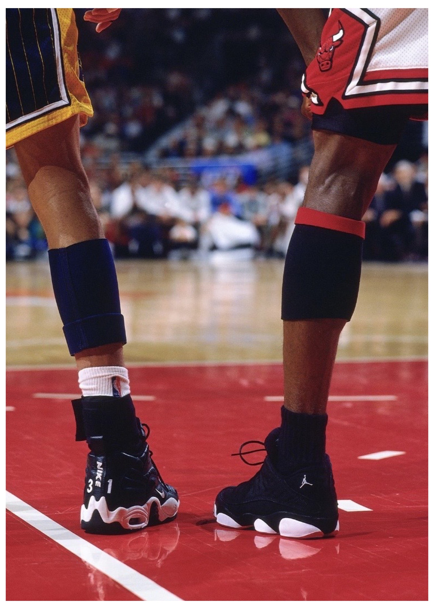
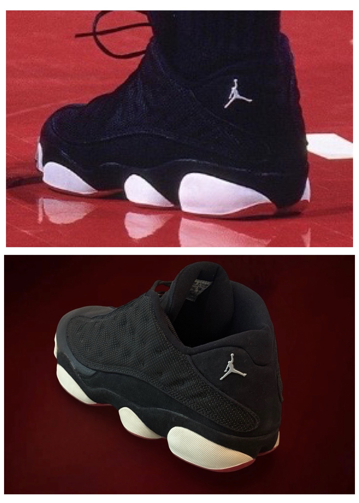

1997–98 Michael Jordan — Air Jordan Sneakers
Chicago Bulls vs. Indiana Pacers
Image Evidence

In-Game Evidence

Physical Artifact
Findings Summary
Comparative image analysis identified multiple consistent wear characteristics between the examined sneakers and documented in-game photography and in game video.
- Outsole glue marks and pod distortion on left sneaker consistent across frames
- Creasing patterns consistent with documented date span
- Creasing patterns on right sneaker are consistent and have been cross referenced with multiple examples and each presented a unique creases.
- Front right shoe outsole - has two consistent imperfections along upper portion, which meets leather of sneaker upper.
The material presented here represents a curated sample of the comparative findings. The full analysis includes additional frame review and extended documentation.
Provenance & Documentation
Provenance
This pair of game worn shoes has passed a second authenticator and photomatch service utilizing our research.
Supporting Documentation
- Letter of Authenticity (LOA): Yes
- Source Material: Game imagery
- Internal Reference ID: CF-0005-AJ13-low-g7-1998
Notes
This paid sneakers was used in game 7 of the Eastern Conference Final of the Last Dance Season.